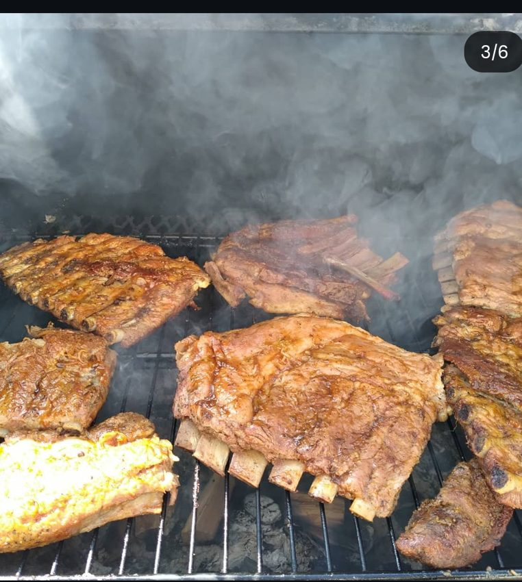
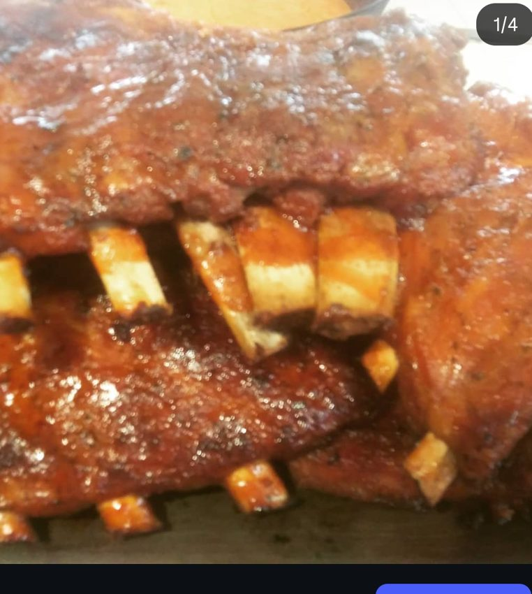
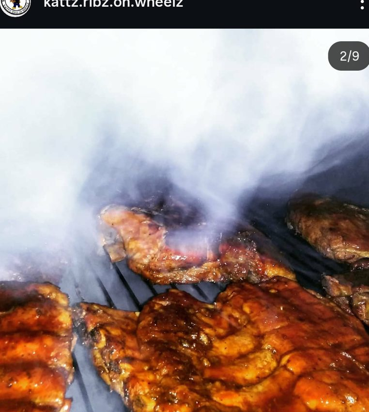
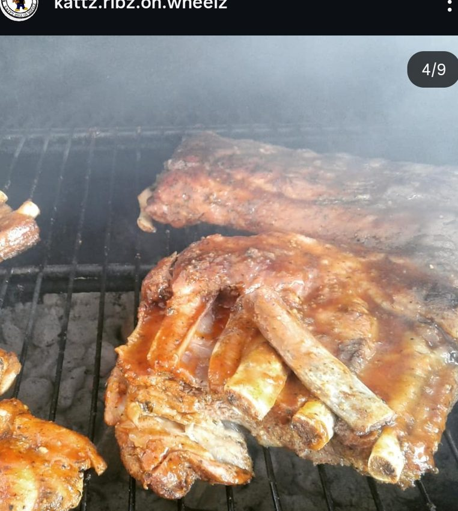
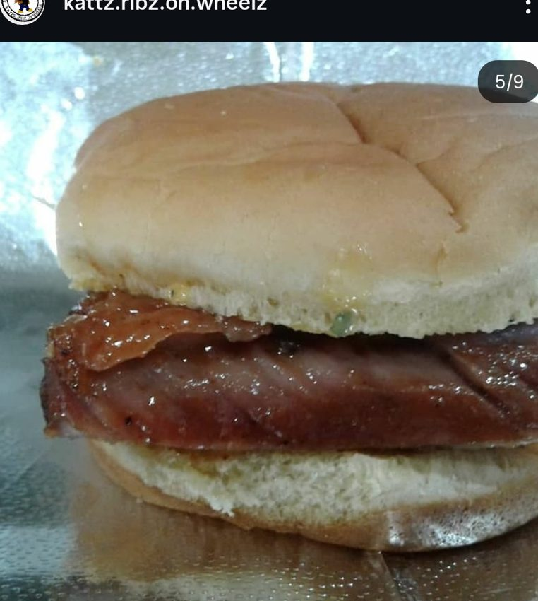
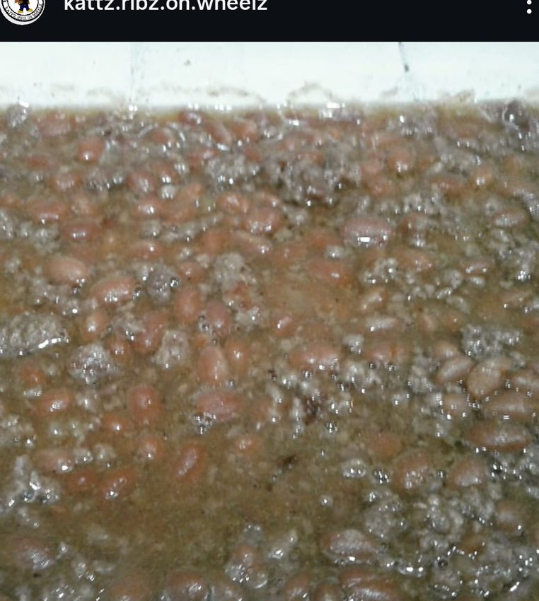
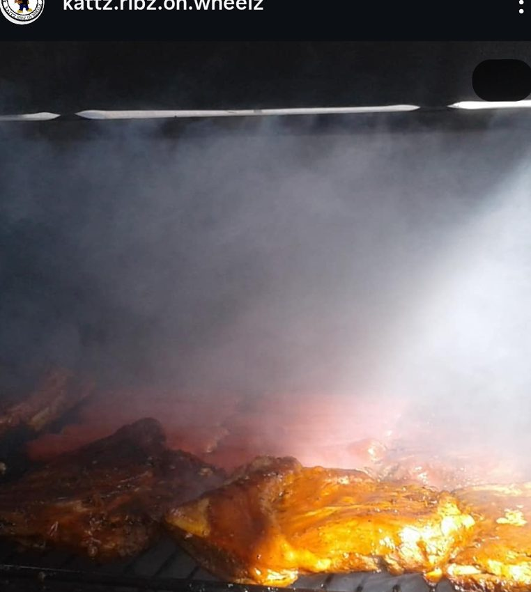

Smoked BBQ Favorites❤️ Southern Soul⌕ Search recipes, restaurants, food trucks...
Featured 🔥
See All ›Trending Recipes
See All ›
Comfort Food Classics❤️ Made with Love
Saucy Ribz❤️ Real Flavor
Southern Dinner Plates❤️ Big Flavor📍 LOCAL SPOTLIGHT
Food Trucks • Caterers • Restaurants
Discover the people and places serving great food. Open the food truck locator to browse vendor locations. Vendor sign-in and live location publishing are planned next.
🗺 Open Food Truck Map →Community

Real Food
Real People
Real StoriesGet Saucy is free for everyone. • Get Lost in the Sauce, Baby!